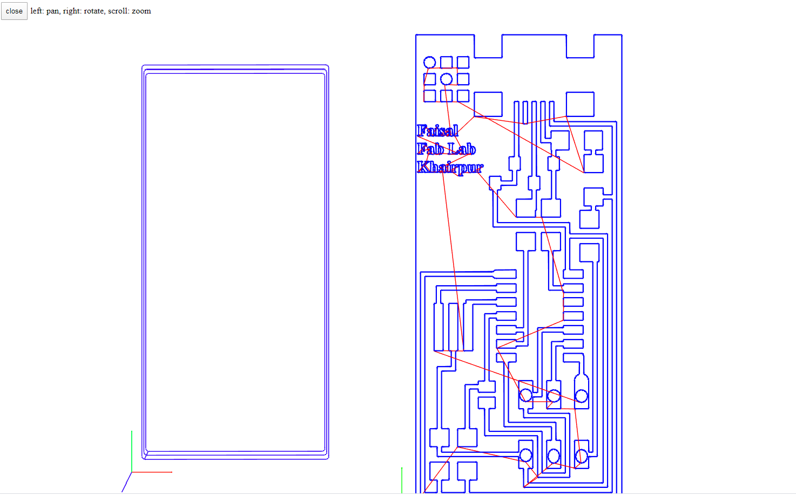
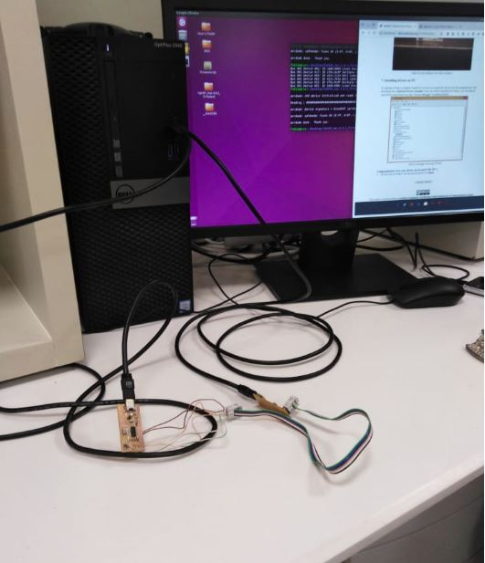
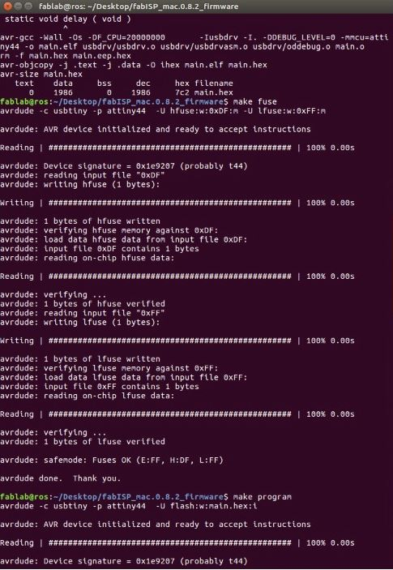
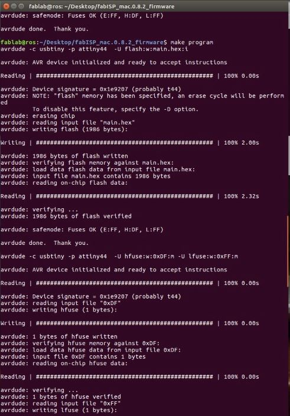
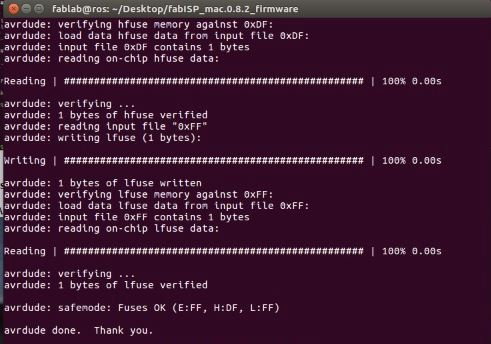
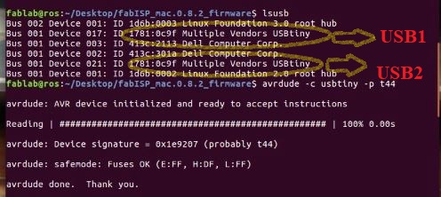
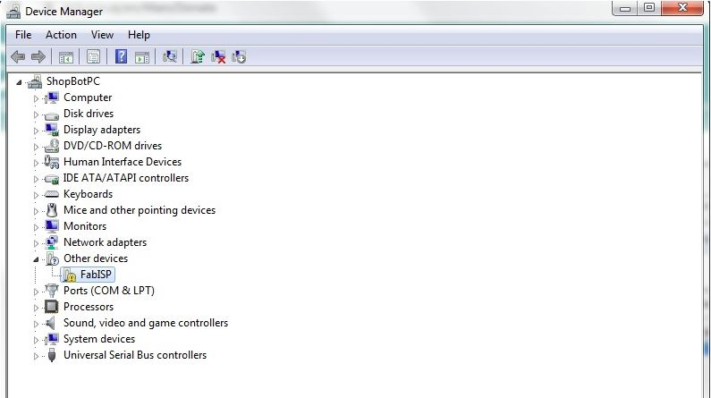

Assignment
- To design the in-circuit programmer (ISP) by milling the PCB.
Introduction about PCB
Electronic circuits in engineering and industry are normally manufactured by using printed circuit boards (PCBs). These boards are made up of special materials that do not conduct electricity such as fiber and glass. The circuits are designed on the boards with copper tracks instead of wires for the conduction of electricity between the electronic components. The electronic components are fixed in their respective positions by drilling holes on the board, placing the components and then soldering them in appropriate positions so that the copper tracks and components together form a circuit. The printed circuit boards used in all electronic products such as automotive, wireless devices, Robotic applications, etc., offer quick functioning, access, control, monitoring, and precise and exact results when compared to other wiring methods based devices The below figure shows how the circuit is arranged on a PCB with the copper layer.
GROUP ASSIGNMENT: CHARACTERIZE THE DESIGN RULES OF YOUR PCB PRODUCTION PROCESS
In this week we worked on PCB fabrication and milling. We have Choose to work on SRM 20 machine for PCB Milling. So we had to charcterize the design rules like what minimum distance in-between traces can be detected by PCB milling machine or not , and what effect does the width of trace posses while Milling. Below is attached the board we made as a group assignment. We found it in fab academy weekly notes.
Generate the RML files by using Mods
There are few steps for generating RML files.
- Open the mods.cba.mit.edu
- Right click on Mods Icon
- Go to the Programs open to the Open Server Program
- Choose the Roland SRM-20 PCB-PNG.
- For Saving the rml File we Removed the Web Socket Device and the Save file.
- Right click on the Mods Space and Open the Module, Open Server Module, Select and the File Save.
-
- Soldering Iron
- Soldering wire
- Tweezer
First think to download and install is Xcode from here
CrossPack for AVR is download from here
-
Final thing that we need to download FabISP firmware, it can be download from here

Image Show that How to Use the Mods for Generating the rml

Outer of the Test Board

Generated RMl File


Now Open the SRM-20 Machine
For Milling with Roland SRM-20 we are using VPanel software, it has a direct wired connection with the machine. Following image shows the GUI of this software.
Set the Origin x, y,z (0,0,0) Milling the Trace and set the Bit(1/64) and for Outer (1/32)

Put the Trace File for the Milling
Click “Cut” on the control panel. the Add the File for the Milling

While Milling the Of Test file

After the complete traces Put the Outer File siung Same Process
Test File After Milling

Individual Assignment: Make an in-system programmer(ISP) by milling the PCB using ATTINY-44
PCB ISP Programmer PNG file are taken from the Fab Academy 2020

Generate RML files for ISP Programmer ATTINY-44
As we already have milled the PCB layout of Test File. So now We repeat same Process, for milling The ISP Programmer sor that we need RML files. we can generate this files using mods.cba.mit.edu.

Outer Of ISP Programmer

RML File of the ISP Programmer
 Now I want to Mill the ISP Programme USING SRM-20 Machine
Replace the PCB Board with New Board

Same Proccess Test file Milling is Repeat for ISP Programer. the Final result Of ISP Programmer :

There are some soldering tools I used to solder my PCB Programmer
while Soldering the Circuit

After the Soldering ISP Programmer ATTINY-44

Programming to ISP
I am using Ubuntu OS based computer uesd to program my fabISP in Ubuntu.here Procedure is desifine:
In Mac OS.
First thing is to install all the required softwares. For programming I found this tutorial very helpful
For programming fabISP I am using Labs computer here.
I followed this fab lab tutorial to program my fabISP.
After followoing the all above steps we need to open the terminal and use four commands 1.make clean 2.make hex 3.make fuse 4.make program and the response is given below.(Note: I am using AVR ISP mkII that is why I do not need to make changes in default hex file.)
USB ATTINY-44 Connections for the ISP Program:
 Now These Are the Intuctions for the ISP Progam:
After the Downlaod and Add the File , Libararies so On and set the Path of ISP Firware :

Now Make Puse and Make
Now Make Program :
Now It Complete the Program in ISP ATTINY-44 Programer:
Now Use the Lsusb Command to show the Attiny Borad verifications:
After This I ahve test My Design Board on the Window, So My design Board is working on the Window
Removing Zero resistors (jumpers)
After Successful programming its turn to remove zero jumpers to make circuit as a programmer.

Further more Installing the drivers and test the ISP Programmer: .
So we need to install the drivers for the programmer. We can download from this site HERE
After the Installation the Drivers and Now My Design ISP Is working Successfully.